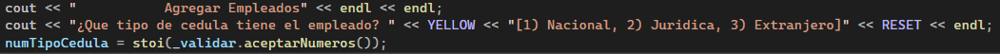

Índice
1 - Main.cpp
En Main.cpp encontrarás 2 funciones, una llamada int MenuPrincipal(int menuOpcion) y int main(). En este archivo es donde se realizará la ejecución del programa y de donde el usuario interactuará con el programa.
1.1 - int MenuPrincipal(int menuOpcion)
Este metodo es la encargado de desplegar las opciones del menú principal y que en usuario escoja que acción quiere realizar dentro del programa, la función tiene un Try - Catch para prevenir posibles errores en caso de que el programa tenga algún posible error. Para que el usuario seleccione una opción, la variable menuOpcion va a ser igualada al resultado de la función aceptarNumeros(), y después de que menuOpcion allá recibido esos datos, pasará por un ciclo while en donde si el valor que el usuario inserta no es válido, se le pedirá que vuelva a ingresar una opción hasta que ingrese una opción válida y después se le retornará la opción seleccionada con la variable menuOpcion. En caso de que se active el Try - Catch mostrará el mensaje de error y retornará el valor de menuOpcion = 0 para que el usuario vuelva a seleccionar una opción.
1.2 - int main()
Este metodo será donde se ejecute el programa, al iniciar el programa el usuario será bienvenido con una pantalla de titulo del programa, y se le será que pulse cualquier tecla pará iniciar. En la línea 52 del archivo, estará esta función llamada setlocale(LC_ALL, ""); que será la encargada de permitir que el programa muestre caracteres especiales como las aperturas de los signos de interrogación o exclamación.Más abajo encontraremos que estamos llamando a 3 clases: Persona, ListaEmpleados y Validaciones, y declaramos una variable opcion, esta ultima será la encargada de llevar la opción seleccionada por el usuario en int MenuPrincipal(int menuOpcion), después se ejecutará la función de cargarArchivo(), y después se iniciará el ciclo while donde si opcion = 0, se iniciara la función de int MenuPrincipal(int menuOpcion) y lo que retorne será almacenado en opcion, y después se inicializará un switch donde se tomará en cuenta el valor que lleve opción.
1.2.1 - Agregar Empleados
Sí opcion = 1 se inicializará este metodo para agregar empleados al sistema, dentro de un Try – Catch se declaran varias variables que ayudarán en el proceso de llenado de datos. Después de las declaraciones de variables se iniciará un ciclo while donde si confirmacion == "N" tendrás que llenar el formulario, se le pedirá al usuario que ingrese un tipo de cedula.  La variable numTipoCedula será igualado al resultado del metodo aceptarNumeros() y después pasará a un ciclo while donde si el usuario ingresa una opción donde no es válida se le solicitará al usuario que vuelva a ingresar el tipo de cedula. Después de haber ingresado una opción válida, pasara en un switch donde se validará el valor de numTipoCedula, si el usuario ingresa 1, se le hará un set al TipoCedula de la clase Persona, y será igual a Nacional, después se le solicitará que ingrese el número de cedula, teniendo en cuenta las validaciones establecidas en el cout, después se hará un set a Cedula de la clase Persona y ejecuta el metodo de aceptarNumeros() después de que el usuario halla ingresado el dato se iniciará un ciclo while donde se validará que la cantidad de digitos sea igual a 9, que los 0 se encuentren ubicados en los lugares correctos y que la cedula no haya sido registrada previamente en el sistema mediante la función de verificarCedula(string cedula), al incumplir alguna de esas condiciones se le pedirá al usuario que vuelva a ingresar al número de cedula, si el usuario elige que numTipoCedula = 2, el Tipo de Cedula será igual a Jurídica y se validara nuevamente si la cedula ya fue registrada mediante el metodo de verificarCedula(string cedula), y que contenga 12 números, y si el usuario elige que numTipoCedula = 3 el Tipo de Cedula será extranjera, y contará con las mismas validaciones que numTipoCedula = 2. Después se le pedirá al usuario que ingrese el nombre completo del empleado, la nacionalidad, y donde es que reside. El número de teléfono será generado de forma automática mediante el metodo de numeroTelefonoAleatorio(), después se le pedirá que ingrese la cantidad de hijos y su estado civil actual, al igual que con el tipo de cedula, se llamará al metodo de aceptarNumeros(), y el valor retornado se validará si la opción que ingresa es válida dentro de las opciones del Estado Civil, de lo contrario pasará por un ciclo while solicitándole al usuario que ingrese una opción válida, después pasará por un switch donde se validará la opción ingresada para el estado civil, y dependiendo del valor de numEstadoCivil, se le hará un set a EstadoCivil, después se le pedirá que ingrese la cantidad de horas de trabajo al mes, las horas extras acumuladas del mes y el puesto del empleado, y harán uso del metodo aceptarNumeros() y al igual que en casos similares, la opcion que el usuario le asignó a numTipoEmpleado será validado, mediante un ciclo while y después pasará por un switch que asignará el tipo de empleado a la clase Persona. Una vez que el usuario halla terminado de ingresar los datos se le preguntará si los datos ingresados son correctos, para eso se iniciará el metodo de confirmacionDefS() y el valor retornado se almacenará en confirmacion, en caso de que sean correctos los datos se inicia el metodo de agregarEmpleados(Persona p) donde se almacenarán los datos en un nodo, si los datos ingresados no son correctos, se iniciará un ultimo metodo guardarArchivo() que guardará a su vez los datos de los nodos en un archivo volverá al inicio del ciclo, una vez terminado el ciclo, se definirá opcion = 0 para regresar al Menú Principal.
1.2.2 - Mostrar Empleados
En esta opción se mostraran todos los usuarios registrados en el sistema, por lo que se inicializará el metodo mostrarEmpleadosCompleto(), una mostrados los datos, el usuario deberá pulsar cualquier tecla para continuar y opcion = 0 para ser regresado al menú principal.
1.2.3 - Actualizar Empleados
En esta opción se inicializa el metodo mostrarEmpleadosSimple() para ayudar al usuario a encontrar que se quiere actualizar de una forma más eficiente, después se le preguntará el número de cedula del usuario y lo ingresa con el metodo aceptarNumeros() y una vez ingresado los datos se buscará al empleado mediante el metodo buscarEmpleados(string cedula) y retornará los datos de ese empleado y se almacenaran en la variable valorActual que pertenece a la clase de Nodo, si el metodo regresa un valor nulo significa que ese usuario no fue encontrado por lo que pasará por un ciclo while donde se le pedirá la cedula otra vez, hasta que retorne el empleado que se le solicitó. Una vez encontrado el empleado, se le pedirá al usuario que ingrese la información por la cual va a ser actualizada, apartir de acá se utilizará el mismo sistema para ingresar los datos que se utilizo para Agregar Empleados. Cuando el usuario termine de ingresar los datos y confirmar que los datos han sido correctamente ingresados, se inicializará el metodo actualizarEmpleados(Nodo* valorModificar, Persona p) donde va a recibir el nodo que se va a actualizar y la clase Persona con los datos serán cambiados del nodo, una vez terminado el metodo se iniciará el metodo guardarArchivo() para actualiza los datos del nodo en el archivo, y opcion = 0 para poder regresar al menú principal.
1.2.4 - Borrar Empleados
Al igual que en Actualizar Empleados, se le inicializará el metodo mostrarEmpleadosSimple() y se le solicitará la cedula del empleado que se quiere borrar mediante el metodo aceptarNumeros(), y después se buscará al empleado en el metodo buscarEmpleados(string cedula), una vez encontrado se le preguntará al usuario si quiere confirmar en borrar al empleado mediante el metodo confirmacionDefN() si el usuario confirma en borrar al empleado de la lista se ejecutará el metodo borrarEmpleados(Nodo* valorBorrar) donde se le enviará el nodo del empleado que se va a borrar, y por ultimo, se inicializa el metodo de guardarArchivo() que guardará los cambios en el archivo y opcion = 0 para poder regresar al menú principal.
1.2.5 - Borrar Lista de Empleados
En esta opción se borrarán todos los empleados registrados en el sistema, por lo que se le pregunta al usuario si de verdad quiere borrar la lista de empleados mediante el metodo confirmacionDefN(), si el usuario confirma en realizar esa accion, se inicializará el destructor de la clase ListaEmpleados que se encargará de borrar toda de empleados, y opcion = 0 para regresar al menú principal.
1.2.6 - Calcular Salario Mensual de un Empleado
De igual forma que con Actualizar Empleados y Borrar Empleados se inicializará el metodo mostrarEmpleadosSimple() y después se le pedirá que ingrese el numero de cedula en el metodo aceptarNumeros(), una vez ingresados los datos se buscará al empleado mediante el metodo buscarEmpleados(string cedula) y su resultado será almacenado en la variable de valorActual de la clase de Nodo, si el valor que regresa el metodo es null entonces significa que el usuario no fue encontrado, por lo que pasará por el ciclo while y se le solicitará que vuelva a ingresar la cedula hasta que el empleado sea encontrado. Ya encontrado el empleado se inicializará el metodo calcularSalarioIndividual(Nodo* valorConsultar) que se le enviará el nodo del empleado con la información para realizar los calculos del salario, cuando se termina de ejecutar el metodo, el usuario pulsará cualquier tecla para avanzar y opcion = 0 para regresar al menú principal del sistema.
1.2.7 - Calcular Salario Mensual de todos los Empleados
Para está opción se inicializará únicamente el metodo calcularSalarioTodos() que será el encargado de calcular todos los salarios de todos los empleados registrados en el sistema, una vez el metodo termine de ejecutarse al final al usuario se le presentará un resumen con los totales de todos los pagos que se realizarán, el usuario deberá pulsar cualquier tecla para continuar y opcion = 0 para regresar al menú principal.
1.2.8 - Salir
Si el usuario escoje esta opción, el programa terminará de ejecutarse mediante el metodo exit(0).
2 - ListaEmpleados
Esta clase es la encargada de realizar varios de los procesos donde se tomarán en cuenta a los empleados que han sido registrados en el sistema además de guardar todos los nodos creados. En esta clase se crearán 2 tipos de variables de la clase Nodo, que son primerValor y valorActual, el primero será la encargada de contener los datos del primer empleado de la lista mientras que valorActual, será usada para contener cualquier nodo de la lista, este dato tendrá uso cuando se requieran agregar empleados, buscar por empleados o eliminar empleados. Esta lista estará ordenada según el número de cedula del empleado.
2.1 - ListaEmpleados()
Este es el constructor de la clase... cuando se inicia el programa variables del tipo Nodo primerValor y valorActual será nulas, esto es más que todo para asegurarse que no haya ningún nodo en memoria con datos a la hora de empezar a hacer uso del programa y evitar conflictos si se agregan datos a los nodos.
2.2 - agregarEmpleados(Persona p)
Este metodo se usará para agregar los datos de los empleados a los nodos, esta requiere un dato de tipo Persona que contendrá los datos ingresados por el usuario para ser agregados en la lista. Al iniciar se igualará valorActual con primerValor indicando que ahí en donde se iniciará a buscar los campos en la lista. Se entrará a un if donde se validará si primerValor != null (Si tiene algún valor registrado) o si el número de cedula que tiene en el dato es mayor al número de cedula que vamos a ingresar, al llegarse a cumplir alguna de estás 2 condiciones los quedarán guardados en primerValor, si ya hubieran datos registrados en la variable, simplemente esos se mueven al siguiente puesto mientras que en primerValor se ingresan los nuevos datos, si no se cumplen ninguna de estas 2 condiciones el programa entrará en un while donde valorActual tomará los datos del siguiente nodo. El ciclo se detendrá una vez que llegue a un valor que no sea nulo y que su número de cedula sea igual o menor que la cedula que fue ingresada por el usuario en registro. Una vez encontrado el nodo indicado, moverá los datos de ese nodo al siguiente nodo y los datos se registrarán en ese nodo y quedarán guardados en memoria.
2.3 - actualizarEmpleados(Nodo* valorModificar, Persona p)
Este metodo estará encargado de remplazar los datos un nodo que el usuario escoge con datos nuevos, esta metodo debe recibir 2 variables, valorModificar del tipo Nodo* que será el nodo exacto a modificar, este dato proviene del valor que retorna la función buscarEmpleados(string cedula) y la otra variable que se necesita es p del tipo Persona, que continienen los nuevos datos que remplazarán al nodo en cuestión. Mediante el método de setValor(), los datos del nodo podrán ser remplazados.
2.4 - mostrarEmpleadosCompleto()
Este metodo se encargará de buscar a todos los usuarios que están registrados en el sistema, y los valores que se obtienen de cada nodo serán enviados a un metodo MostrarPersona() que será el encargado de mostrar los datos de ese nodo en la consola. Al iniciar valorActual será igualado a primerValor, esto servirá como un punto de partida para ir por cada nodo para mostrar los datos, en caso de que no hallan empleados registrados en el sistema, se activará el Try - Catch y se le mandará un mensaje de error indicando que no hay empleados registrados en el sistema.
2.5 - borrarEmpleados(Nodo* valorBorrar)
Este metodo será el encargado de borrar los datos de un nodo, y para esto el metodo recibe una variable valorBorrar de tipo Nodo* que contiene el nodo deseado a borrar, estos datos provienen del valor que retorna de el metodo buscarEmpleados(string cedula). Al iniciar el metodo valorActual será igualado con primerValor, después de verificará que primerValor coincide con los datos de valorBorrar, de ser así a valorActual se le asignaran los datos del siguiente nodo (El nodo después del primero), y se borrarán los datos de primerValor, y después primerValor será igualados con los datos de valorActual, convirtiéndose en el nuevo primer nodo y se utiliza el return para terminar de ejecutar el metodo. Si primerValor no coincide con los datos de valorBorrar, simplemente se borrarán los datos que coincidan con valorBorrar y la función se termina de ejecutar.
2.6 - calcularSalarioIndividual(Nodo* valorConsultar)
Este metodo se encargará de enviar los datos del nodo para calcular el salario de un empleado en específico por lo que recibe los datos bajo la variable valorConsular de tipo Nodo*, estos datos provienen del dato que retorna la función buscarEmpleados(string cedula). Se crea una variable de tipo Empleado, esto ayudará a realizar la inicialización del metodo CalcularSalario(), y se le enviaran los datos de valorConsultar para que pueda calcular los datos de ese empleado.
2.7 - calcularSalarioTodos()
Al igual que el metodo calcularSalarioIndividual(Nodo* valorConsultar), este metodo mandará los datos del nodo al metodo CalcularSalario() de forma individual, la diferencia siendo que en lugar de solo mandar uno en específico, mandaran todos los datos de todos los nodos mediante un ciclo while, similar a como funciona el metodo mostrarEmpleadosCompleto() o mostrarEmpleadosSimple(). Además con ayuda de una variable de tipo Empleado podemos tomar los resultados de los calculos individuales y concatenarlos para mostrar al final un resumen que muestra todos los datos totales mediante el metodo MostrarSalarioTotal().
2.8 - ListaEmpleados()
Este es el constructor de la clase... cuando se inicia el programa variables del tipo Nodo primerValor y valorActual será nulas, esto es más que todo para asegurarse que no haya ningún nodo en memoria con datos a la hora de empezar a hacer uso del programa y evitar conflictos si se agregan datos a los nodos.
2.9 - ListaEmpleados()
Este es el constructor de la clase... cuando se inicia el programa variables del tipo Nodo primerValor y valorActual será nulas, esto es más que todo para asegurarse que no haya ningún nodo en memoria con datos a la hora de empezar a hacer uso del programa y evitar conflictos si se agregan datos a los nodos.
2.10 - ListaEmpleados()
Este es el constructor de la clase... cuando se inicia el programa variables del tipo Nodo primerValor y valorActual será nulas, esto es más que todo para asegurarse que no haya ningún nodo en memoria con datos a la hora de empezar a hacer uso del programa y evitar conflictos si se agregan datos a los nodos.
2.11 - ListaEmpleados()
Este es el constructor de la clase... cuando se inicia el programa variables del tipo Nodo primerValor y valorActual será nulas, esto es más que todo para asegurarse que no haya ningún nodo en memoria con datos a la hora de empezar a hacer uso del programa y evitar conflictos si se agregan datos a los nodos.
2.12 - ListaEmpleados()
Este es el constructor de la clase... cuando se inicia el programa variables del tipo Nodo primerValor y valorActual será nulas, esto es más que todo para asegurarse que no haya ningún nodo en memoria con datos a la hora de empezar a hacer uso del programa y evitar conflictos si se agregan datos a los nodos.
2.13 - ListaEmpleados()
Este es el constructor de la clase... cuando se inicia el programa variables del tipo Nodo primerValor y valorActual será nulas, esto es más que todo para asegurarse que no haya ningún nodo en memoria con datos a la hora de empezar a hacer uso del programa y evitar conflictos si se agregan datos a los nodos.